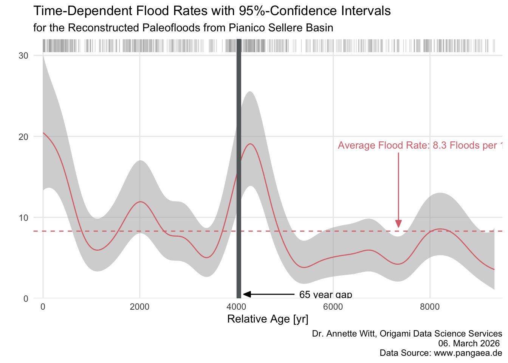

library(tidyverse)── Attaching core tidyverse packages ──────────────────────── tidyverse 2.0.0 ──
✔ dplyr 1.1.4 ✔ readr 2.1.5
✔ forcats 1.0.0 ✔ stringr 1.5.1
✔ ggplot2 4.0.0 ✔ tibble 3.3.0
✔ lubridate 1.9.4 ✔ tidyr 1.3.1
✔ purrr 1.1.0
── Conflicts ────────────────────────────────────────── tidyverse_conflicts() ──
✖ dplyr::filter() masks stats::filter()
✖ dplyr::lag() masks stats::lag()
ℹ Use the conflicted package (<http://conflicted.r-lib.org/>) to force all conflicts to become errorslibrary(readr)
# Read Data Sets ----
floods_per_year <- read_tsv("Data/floods_per_year.csv")Rows: 9270 Columns: 2
── Column specification ────────────────────────────────────────────────────────
Delimiter: "\t"
dbl (2): varve_year, no_of_layers
ℹ Use `spec()` to retrieve the full column specification for this data.
ℹ Specify the column types or set `show_col_types = FALSE` to quiet this message.max_year= max(floods_per_year$varve_year)
## Definition of some helper data files ----
years = 1:max_year
x <- rep(NA, max_year)
x[floods_per_year$varve_year] <- floods_per_year$no_of_layers
x_data = rep(1,max_year)
x_data[is.na(x)] = 0
x[is.na(x)] <- 0
bandwidth = 250
filter_coeffs <- dnorm(seq(-4,4,by=1./bandwidth))
length_filter <- length(filter_coeffs)
## Getting prepared for fast filtering: zero padding at the beginning and end of the files ----
xx <- c(rep(0,length_filter), x, rep(0,length_filter))
xx_data <- c(rep(0,length_filter), x_data, rep(0,length_filter))
## Filter the data with a Gaussian kernel ----
# (note that the resulting vectors have the original (before padding with zeros) length)
no_of_floods_per_bandwidth <- (stats::filter(xx, filter_coeffs))[length_filter + (1:length(x))]
effective_no_of_data_points <-(stats::filter(xx_data, filter_coeffs))[length_filter + (1:length(x))]
flood_rate_bw_250yrs = no_of_floods_per_bandwidth/effective_no_of_data_points
## Computation of confidence bands ----
CI_l = 0.5*qchisq(0.025,2*no_of_floods_per_bandwidth)/effective_no_of_data_points
CI_u = 0.5*qchisq(0.975,2*no_of_floods_per_bandwidth+2)/effective_no_of_data_points
# PLOT ----
## Tibble for flood density Plot ----
rate_floods_per_century <- tibble(time = years, flood_rate_bw_250yrs = 100 * flood_rate_bw_250yrs, lower_confidence_interval = 100 * CI_l, upper_confidence_interval = 100 * CI_u)
## Plot of Upper Panel ----
w = which(floods_per_year$no_of_layers >0)
rep(floods_per_year$varve_year[w], floods_per_year$no_of_layers[w]) -> flood_years
flood_years = tibble(time = flood_years, no_of_layers = 0)
ggplot() +
geom_ribbon(data = rate_floods_per_century, aes(x = time, ymin = lower_confidence_interval, ymax = upper_confidence_interval), fill = "darkgrey", alpha=0.5) +
geom_line(data = rate_floods_per_century, aes(x = time, y = flood_rate_bw_250yrs), col = "#d8727aff" ) +
geom_hline( yintercept = 8.3, col = "#d8727aff", linetype = "dashed") +
geom_rug(data = flood_years, aes(x = time, y = no_of_layers), sides = "t", length = unit(0.05, "npc"), lwd = 0.25, position = "jitter", alpha = 0.5, color = "darkgrey") +
geom_rect(data = rate_floods_per_century, aes(x = time, ymin = lower_confidence_interval, ymax = upper_confidence_interval), xmin = 4019, xmax = 4083, ymin = 0, ymax = 32., col = "#646868", fill = "#646868") +
annotate( 'text', x = 6100, y = 18.5, label = "Average Flood Rate: 8.3 Floods per 100 yr", col = "#d8727aff", size = 3.5, vjust = 0, hjust = 0 ) +
annotate( 'segment', x = 7350, y = 18, xend = 7350, yend = 8.8, col = "#d8727aff", linewidth = 0.5, arrow = arrow(length = unit(0.25, 'cm'), angle = 22.5, type = "closed")) +
annotate( 'text', x = 5300, y = 0.5, label = "65 year gap", size = 3.5, vjust = 0.5, hjust = 0 ) +
annotate( 'segment', x = 5200, y = 0.5, xend = 4150, yend = 0.5, linewidth = 0.5, arrow = arrow(length = unit(0.25, 'cm'), angle = 22.5, type = "closed")) +
#coord_cartesian(clip = "off") +
labs( x ="Relative Age [yr]",
y = " ",
title = "Time-Dependent Flood Rates with 95%-Confidence Intervals",
subtitle = "for the Reconstructed Paleofloods from Pianico Sellere Basin",
caption = paste("Dr. Annette Witt, Origami Data Science Services\n ",format(Sys.Date(), format = "%d. %B %Y"),"\n Data Source: www.pangaea.de")) +
scale_x_continuous(limits = c(-200, 9500), expand = c(0,0), breaks = (0:4)*2000) +
scale_y_continuous(breaks = (0:3)*10, limits = c(0, 32), expand = c(NA,0)) +
theme_minimal() +
theme(
panel.grid.minor.y = element_blank(),
panel.grid.minor.x = element_blank(),
legend.position = "none")